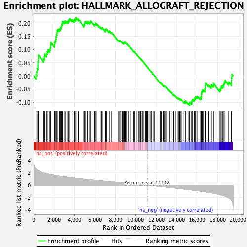
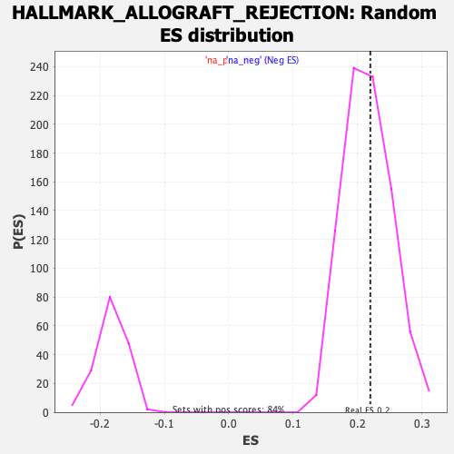

| | | Dataset | CK_basal |
| Phenotype | NoPhenotypeAvailable |
| Upregulated in class | na_pos |
| GeneSet | HALLMARK_ALLOGRAFT_REJECTION |
| Enrichment Score (ES) | 0.22003207 |
| Normalized Enrichment Score (NES) | 1.0192215 |
| Nominal p-value | 0.4222488 |
| FDR q-value | 0.5610824 |
| FWER p-Value | 1.0 |
Table: GSEA Results Summary

Fig 1: Enrichment plot: HALLMARK_ALLOGRAFT_REJECTION
Profile of the Running ES Score & Positions of GeneSet Members on the Rank Ordered List
| SYMBOL | RANK IN GENE LIST | RANK METRIC SCORE | RUNNING ES | CORE ENRICHMENT | | 1 | LTB | 223 | 2.626 | 0.0043 | Yes |
| 2 | EREG | 310 | 2.506 | 0.0150 | Yes |
| 3 | TNF | 333 | 2.479 | 0.0288 | Yes |
| 4 | NOS2 | 416 | 2.395 | 0.0390 | Yes |
| 5 | CRTAM | 420 | 2.388 | 0.0533 | Yes |
| 6 | CCL7 | 457 | 2.345 | 0.0655 | Yes |
| 7 | CD28 | 480 | 2.325 | 0.0784 | Yes |
| 8 | CCND3 | 985 | 1.977 | 0.0643 | Yes |
| 9 | FGR | 1062 | 1.943 | 0.0721 | Yes |
| 10 | PF4 | 1095 | 1.929 | 0.0821 | Yes |
| 11 | F2R | 1294 | 1.850 | 0.0830 | Yes |
| 12 | CD247 | 1342 | 1.832 | 0.0916 | Yes |
| 13 | GCNT1 | 1420 | 1.807 | 0.0985 | Yes |
| 14 | RIPK2 | 1591 | 1.754 | 0.1003 | Yes |
| 15 | STAT4 | 1655 | 1.731 | 0.1075 | Yes |
| 16 | MRPL3 | 1694 | 1.723 | 0.1159 | Yes |
| 17 | CARTPT | 1704 | 1.718 | 0.1258 | Yes |
| 18 | IL11 | 2047 | 1.614 | 0.1179 | Yes |
| 19 | IL4 | 2063 | 1.609 | 0.1268 | Yes |
| 20 | NCF4 | 2126 | 1.591 | 0.1332 | Yes |
| 21 | KLRD1 | 2187 | 1.571 | 0.1396 | Yes |
| 22 | IL2RB | 2199 | 1.566 | 0.1485 | Yes |
| 23 | ACVR2A | 2235 | 1.554 | 0.1560 | Yes |
| 24 | IFNGR1 | 2288 | 1.537 | 0.1626 | Yes |
| 25 | BCAT1 | 2294 | 1.536 | 0.1716 | Yes |
| 26 | MMP9 | 2371 | 1.514 | 0.1768 | Yes |
| 27 | RPS9 | 2535 | 1.474 | 0.1773 | Yes |
| 28 | IFNG | 2630 | 1.455 | 0.1812 | Yes |
| 29 | ACHE | 2709 | 1.437 | 0.1859 | Yes |
| 30 | TLR3 | 2738 | 1.428 | 0.1930 | Yes |
| 31 | EIF3A | 2804 | 1.413 | 0.1982 | Yes |
| 32 | IL12A | 2823 | 1.408 | 0.2057 | Yes |
| 33 | SOCS1 | 2992 | 1.372 | 0.2053 | Yes |
| 34 | TRAF2 | 3097 | 1.346 | 0.2081 | Yes |
| 35 | CD8A | 3280 | 1.308 | 0.2066 | Yes |
| 36 | IRF7 | 3400 | 1.281 | 0.2081 | Yes |
| 37 | IL12RB1 | 3462 | 1.267 | 0.2126 | Yes |
| 38 | RPL3L | 3537 | 1.250 | 0.2163 | Yes |
| 39 | TLR6 | 3752 | 1.200 | 0.2125 | Yes |
| 40 | ELANE | 3967 | 1.159 | 0.2084 | Yes |
| 41 | IL1B | 3981 | 1.157 | 0.2147 | Yes |
| 42 | CD8B | 4111 | 1.131 | 0.2149 | Yes |
| 43 | LCK | 4144 | 1.125 | 0.2200 | Yes |
| 44 | ITGAL | 4374 | 1.078 | 0.2147 | No |
| 45 | CCR2 | 4938 | 0.981 | 0.1915 | No |
| 46 | RPS19 | 4980 | 0.974 | 0.1953 | No |
| 47 | ITGB2 | 5029 | 0.965 | 0.1986 | No |
| 48 | PRKCB | 5033 | 0.964 | 0.2043 | No |
| 49 | LCP2 | 5124 | 0.949 | 0.2053 | No |
| 50 | CD2 | 5284 | 0.922 | 0.2027 | No |
| 51 | GALNT1 | 5324 | 0.913 | 0.2062 | No |
| 52 | FAS | 5516 | 0.879 | 0.2016 | No |
| 53 | CFP | 5553 | 0.872 | 0.2050 | No |
| 54 | ELF4 | 5607 | 0.862 | 0.2074 | No |
| 55 | IRF4 | 5975 | 0.811 | 0.1934 | No |
| 56 | FCGR2B | 6030 | 0.804 | 0.1954 | No |
| 57 | CDKN2A | 6042 | 0.801 | 0.1997 | No |
| 58 | NLRP3 | 6195 | 0.777 | 0.1965 | No |
| 59 | PTPN6 | 6513 | 0.726 | 0.1845 | No |
| 60 | IFNAR2 | 6656 | 0.702 | 0.1814 | No |
| 61 | AKT1 | 6716 | 0.695 | 0.1825 | No |
| 62 | TAP2 | 7023 | 0.645 | 0.1706 | No |
| 63 | HDAC9 | 7027 | 0.645 | 0.1743 | No |
| 64 | CSK | 7051 | 0.641 | 0.1770 | No |
| 65 | ABCE1 | 7126 | 0.631 | 0.1770 | No |
| 66 | EGFR | 7385 | 0.589 | 0.1672 | No |
| 67 | GBP2 | 7397 | 0.587 | 0.1702 | No |
| 68 | TAPBP | 7588 | 0.555 | 0.1637 | No |
| 69 | IL12B | 7654 | 0.545 | 0.1636 | No |
| 70 | IL4R | 8270 | 0.449 | 0.1345 | No |
| 71 | CD3G | 8353 | 0.436 | 0.1329 | No |
| 72 | LYN | 8422 | 0.426 | 0.1320 | No |
| 73 | CD79A | 8456 | 0.422 | 0.1328 | No |
| 74 | CCL11 | 8540 | 0.407 | 0.1310 | No |
| 75 | MAP4K1 | 8682 | 0.387 | 0.1260 | No |
| 76 | MAP3K7 | 8742 | 0.379 | 0.1253 | No |
| 77 | CD80 | 8835 | 0.365 | 0.1227 | No |
| 78 | IL16 | 8870 | 0.360 | 0.1231 | No |
| 79 | UBE2N | 8871 | 0.359 | 0.1253 | No |
| 80 | PRKCG | 8917 | 0.352 | 0.1251 | No |
| 81 | TLR2 | 8918 | 0.352 | 0.1272 | No |
| 82 | ZAP70 | 8955 | 0.345 | 0.1274 | No |
| 83 | IL18 | 9018 | 0.333 | 0.1262 | No |
| 84 | BCL3 | 9133 | 0.314 | 0.1222 | No |
| 85 | PSMB10 | 9293 | 0.289 | 0.1158 | No |
| 86 | CD1D | 9533 | 0.250 | 0.1049 | No |
| 87 | LIF | 9797 | 0.213 | 0.0926 | No |
| 88 | FLNA | 9867 | 0.202 | 0.0902 | No |
| 89 | WAS | 9869 | 0.201 | 0.0914 | No |
| 90 | ICOSLG | 10049 | 0.175 | 0.0832 | No |
| 91 | EIF3D | 10259 | 0.142 | 0.0733 | No |
| 92 | CTSS | 10395 | 0.121 | 0.0670 | No |
| 93 | IKBKB | 10473 | 0.108 | 0.0637 | No |
| 94 | CCND2 | 10488 | 0.106 | 0.0636 | No |
| 95 | BRCA1 | 10511 | 0.103 | 0.0631 | No |
| 96 | TLR1 | 10601 | 0.089 | 0.0590 | No |
| 97 | IL18RAP | 10674 | 0.077 | 0.0557 | No |
| 98 | GZMB | 10731 | 0.067 | 0.0533 | No |
| 99 | ETS1 | 10948 | 0.030 | 0.0423 | No |
| 100 | APBB1 | 11002 | 0.023 | 0.0397 | No |
| 101 | BCL10 | 11023 | 0.019 | 0.0387 | No |
| 102 | CD4 | 11046 | 0.016 | 0.0377 | No |
| 103 | IL7 | 11131 | 0.002 | 0.0334 | No |
| 104 | C2 | 11144 | -0.000 | 0.0328 | No |
| 105 | TRAT1 | 11281 | -0.022 | 0.0259 | No |
| 106 | GLMN | 11376 | -0.036 | 0.0212 | No |
| 107 | TGFB1 | 11462 | -0.050 | 0.0171 | No |
| 108 | CXCL13 | 11507 | -0.056 | 0.0152 | No |
| 109 | JAK2 | 11509 | -0.056 | 0.0155 | No |
| 110 | GZMA | 11582 | -0.066 | 0.0121 | No |
| 111 | IL2RA | 11751 | -0.093 | 0.0040 | No |
| 112 | ITK | 11807 | -0.103 | 0.0018 | No |
| 113 | NCK1 | 12365 | -0.198 | -0.0258 | No |
| 114 | IL9 | 12371 | -0.199 | -0.0249 | No |
| 115 | IGSF6 | 12417 | -0.206 | -0.0260 | No |
| 116 | CD96 | 12506 | -0.223 | -0.0292 | No |
| 117 | RPL39 | 12694 | -0.254 | -0.0373 | No |
| 118 | NCR1 | 12721 | -0.260 | -0.0371 | No |
| 119 | RPL9 | 12804 | -0.272 | -0.0397 | No |
| 120 | DYRK3 | 12849 | -0.281 | -0.0402 | No |
| 121 | IFNGR2 | 12871 | -0.286 | -0.0396 | No |
| 122 | TAP1 | 12909 | -0.292 | -0.0398 | No |
| 123 | IL2 | 13002 | -0.308 | -0.0427 | No |
| 124 | RPS3A | 13308 | -0.361 | -0.0562 | No |
| 125 | CD47 | 13470 | -0.388 | -0.0622 | No |
| 126 | CD40LG | 13706 | -0.428 | -0.0718 | No |
| 127 | CD7 | 13725 | -0.431 | -0.0701 | No |
| 128 | SPI1 | 13924 | -0.466 | -0.0776 | No |
| 129 | IRF8 | 14127 | -0.501 | -0.0850 | No |
| 130 | ICAM1 | 14175 | -0.509 | -0.0843 | No |
| 131 | CCL2 | 14287 | -0.531 | -0.0869 | No |
| 132 | CD3D | 14365 | -0.546 | -0.0876 | No |
| 133 | IL13 | 14452 | -0.564 | -0.0886 | No |
| 134 | SOCS5 | 14714 | -0.620 | -0.0984 | No |
| 135 | CD3E | 14819 | -0.638 | -0.0999 | No |
| 136 | CAPG | 14842 | -0.642 | -0.0972 | No |
| 137 | DEGS1 | 14883 | -0.652 | -0.0953 | No |
| 138 | ST8SIA4 | 15124 | -0.702 | -0.1035 | No |
| 139 | LY86 | 15271 | -0.729 | -0.1066 | No |
| 140 | TGFB2 | 15274 | -0.730 | -0.1023 | No |
| 141 | NME1 | 15295 | -0.735 | -0.0989 | No |
| 142 | IL27RA | 15472 | -0.769 | -0.1034 | No |
| 143 | IL6 | 15487 | -0.773 | -0.0994 | No |
| 144 | IL2RG | 15493 | -0.775 | -0.0950 | No |
| 145 | CCR1 | 15527 | -0.783 | -0.0920 | No |
| 146 | SIT1 | 15573 | -0.792 | -0.0895 | No |
| 147 | CCL13 | 15704 | -0.820 | -0.0913 | No |
| 148 | ABI1 | 15749 | -0.832 | -0.0886 | No |
| 149 | CD86 | 15759 | -0.835 | -0.0840 | No |
| 150 | THY1 | 15854 | -0.857 | -0.0837 | No |
| 151 | EIF4G3 | 15855 | -0.857 | -0.0785 | No |
| 152 | CD40 | 15970 | -0.878 | -0.0791 | No |
| 153 | STAB1 | 16054 | -0.896 | -0.0780 | No |
| 154 | MBL2 | 16289 | -0.944 | -0.0844 | No |
| 155 | CCL5 | 16393 | -0.967 | -0.0839 | No |
| 156 | MTIF2 | 16397 | -0.968 | -0.0782 | No |
| 157 | EIF3J | 16434 | -0.976 | -0.0742 | No |
| 158 | PRF1 | 16435 | -0.976 | -0.0683 | No |
| 159 | KRT1 | 16444 | -0.978 | -0.0628 | No |
| 160 | FASLG | 16478 | -0.986 | -0.0586 | No |
| 161 | UBE2D1 | 16515 | -0.998 | -0.0544 | No |
| 162 | CXCR3 | 16626 | -1.023 | -0.0539 | No |
| 163 | CSF1 | 16760 | -1.057 | -0.0544 | No |
| 164 | HCLS1 | 16764 | -1.058 | -0.0482 | No |
| 165 | CCR5 | 16790 | -1.068 | -0.0431 | No |
| 166 | CCL19 | 16793 | -1.068 | -0.0367 | No |
| 167 | INHBA | 16801 | -1.069 | -0.0306 | No |
| 168 | CXCL9 | 16853 | -1.082 | -0.0268 | No |
| 169 | STAT1 | 17137 | -1.146 | -0.0345 | No |
| 170 | F2 | 17379 | -1.223 | -0.0396 | No |
| 171 | EIF5A | 17405 | -1.232 | -0.0334 | No |
| 172 | CCL22 | 17594 | -1.291 | -0.0353 | No |
| 173 | IL10 | 17601 | -1.293 | -0.0279 | No |
| 174 | TIMP1 | 18228 | -1.524 | -0.0510 | No |
| 175 | IL15 | 18322 | -1.568 | -0.0464 | No |
| 176 | TPD52 | 18367 | -1.588 | -0.0391 | No |
| 177 | HIF1A | 18507 | -1.647 | -0.0363 | No |
| 178 | NPM1 | 18615 | -1.707 | -0.0316 | No |
| 179 | PTPRC | 18655 | -1.729 | -0.0231 | No |
| 180 | GPR65 | 18739 | -1.778 | -0.0167 | No |
| 181 | SRGN | 19095 | -2.044 | -0.0227 | No |
| 182 | B2M | 19358 | -2.416 | -0.0217 | No |
| 183 | CD74 | 19378 | -2.465 | -0.0078 | No |
| 184 | INHBB | 19408 | -2.540 | 0.0060 | No |
Table: GSEA details [plain text format]

Fig 2: HALLMARK_ALLOGRAFT_REJECTION: Random ES distribution
Gene set null distribution of ES for HALLMARK_ALLOGRAFT_REJECTION